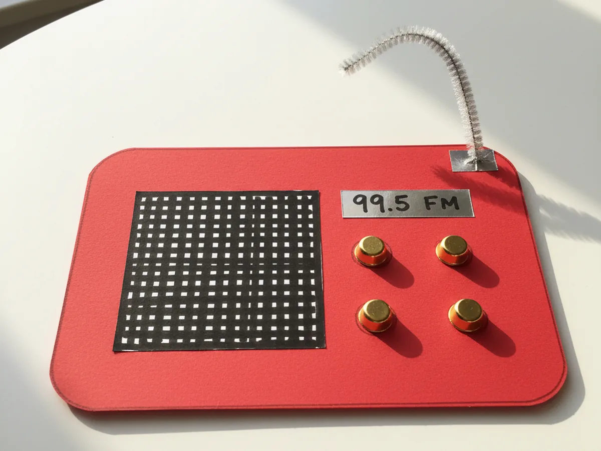
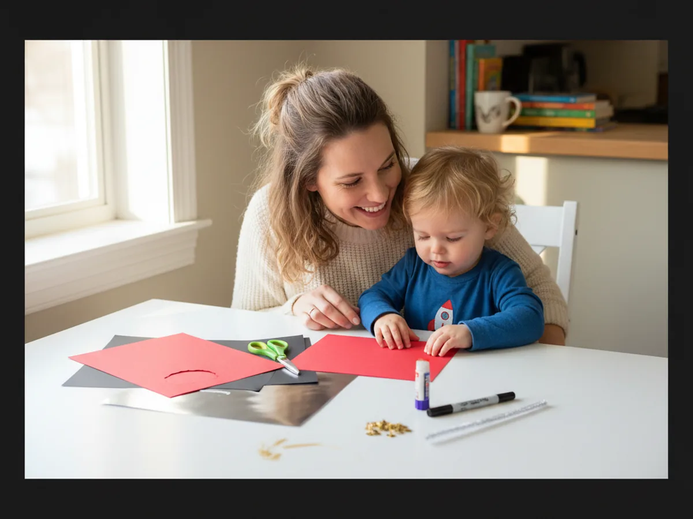
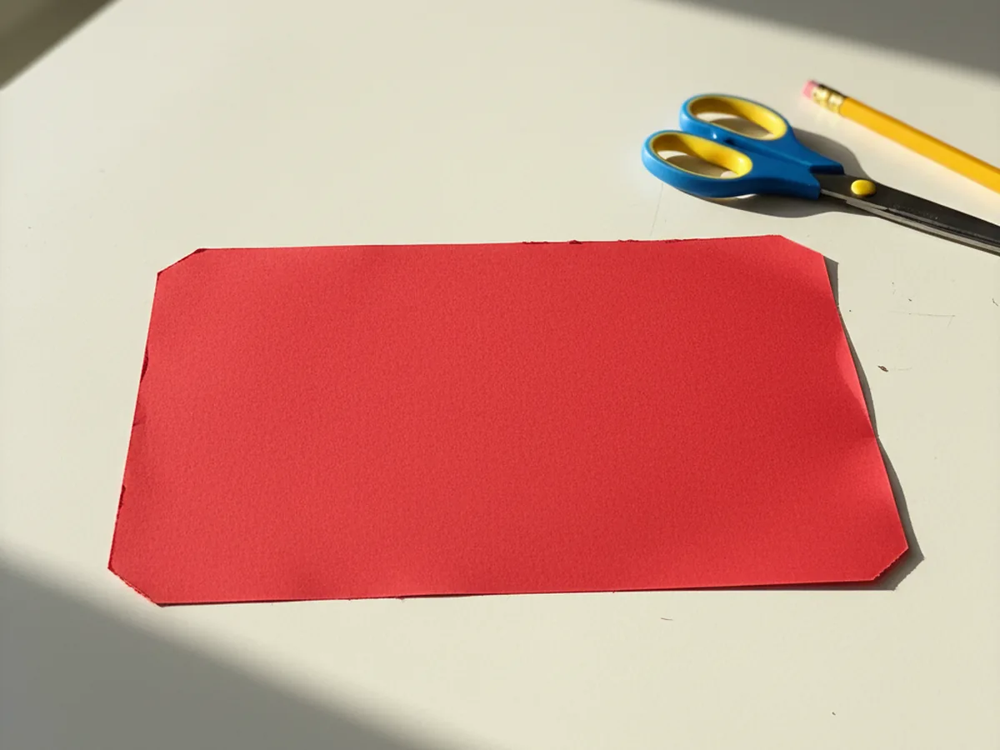
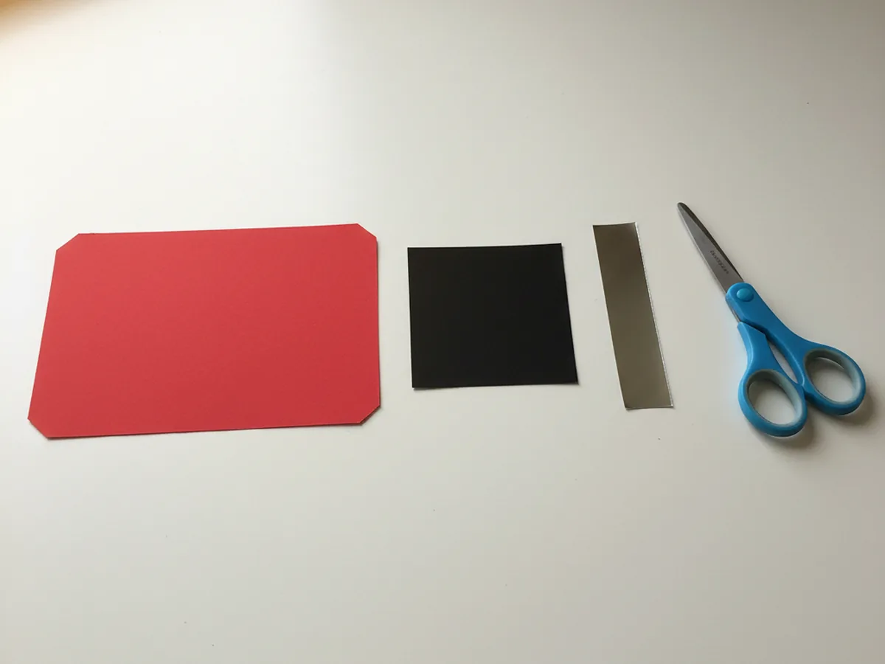
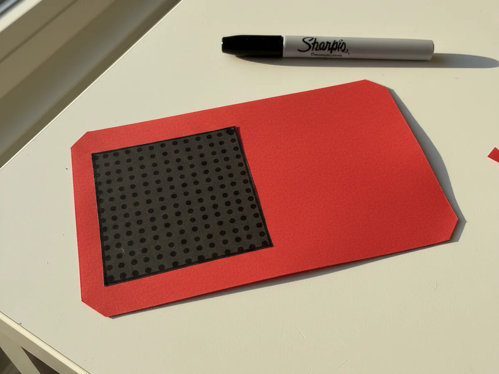
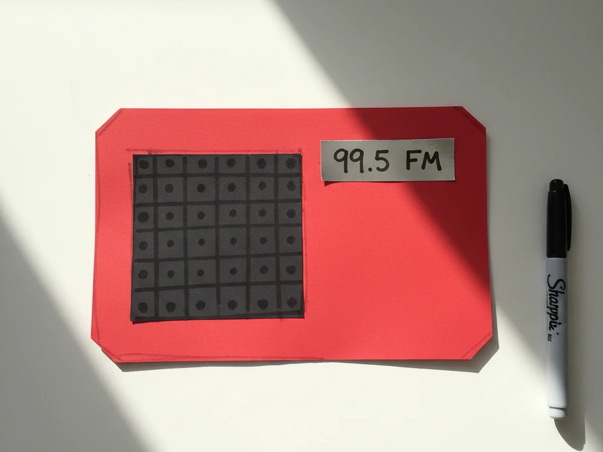
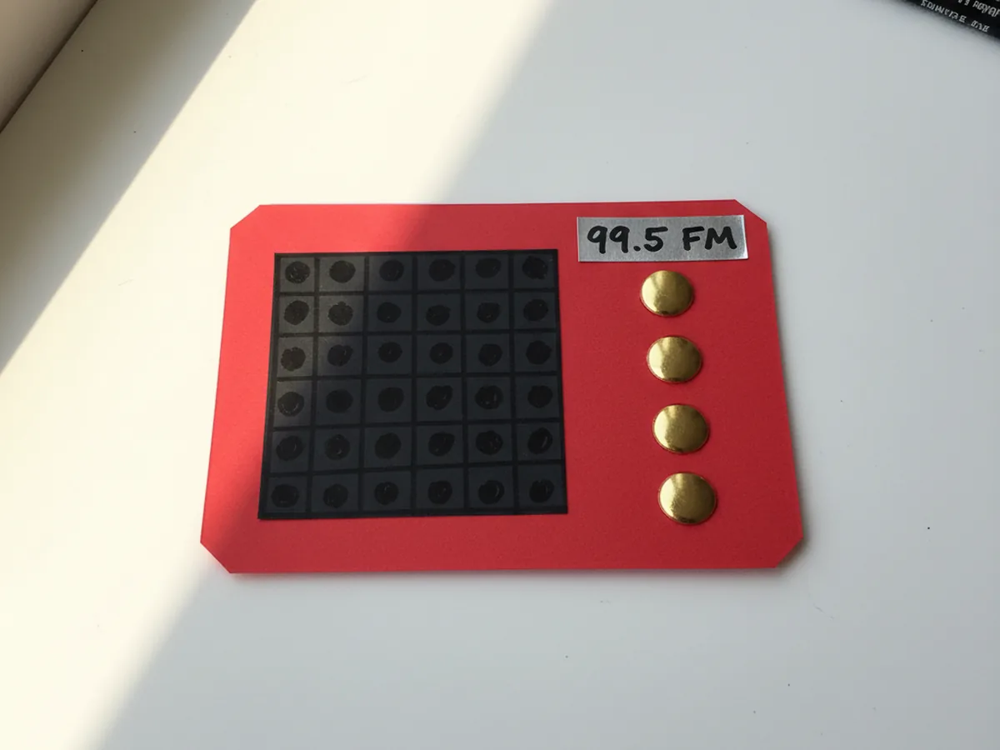
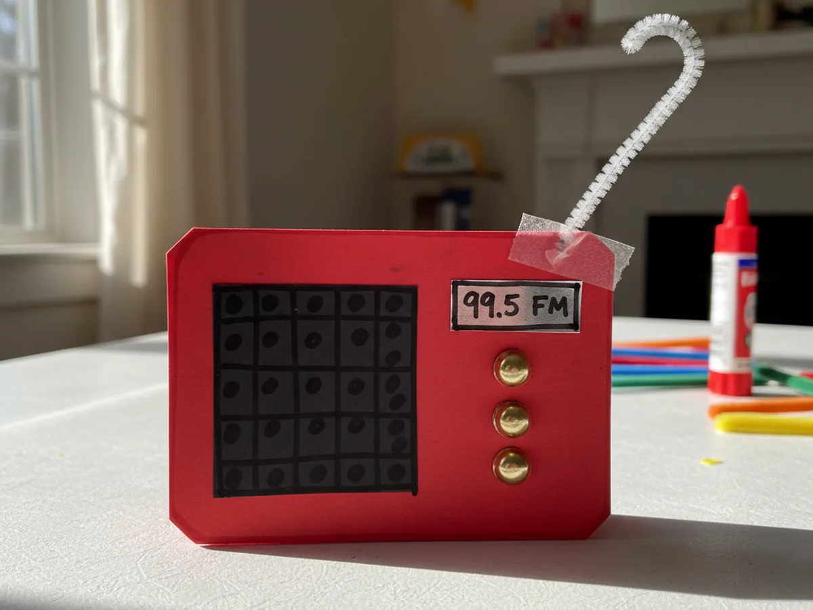

There is something completely charming about a kid holding up a tiny handmade radio and pretending to be a DJ for the afternoon. This radio paper craft takes about thirty minutes from start to finish, uses simple supplies you probably already have, and ends with a pretend-play toy your little one will carry around for days. A bright cardstock body, a few brass brad knobs, a wiggly pipe cleaner antenna, and suddenly your child has their very own retro radio. 📻
The lovely thing about this easy radio paper craft is that there is no painting, no drying time, and almost no mess to clean up. You can sit at the kitchen table on a quiet morning, cut a few shapes, glue them in place, and watch your child's face light up when the antenna goes on. It looks adorable, it sparks hours of pretend play, and it costs almost nothing to make.
Why Kids Love This Craft
Kids fall hard for this radio paper craft because it feels like a real, finished toy when it is done. Most paper crafts get admired and then quietly tucked away in a drawer, but a paper radio gets played with. Children love to fiddle with the brass brad knobs, twist the antenna, and walk around the house pretending to broadcast the weather, sing along to invisible songs, or interview the family cat about her day.
This paper radio craft is also wonderful for sneaky learning. Cutting out the rectangle and the speaker square strengthens early scissor skills, while pushing the brass fasteners through the cardstock builds fine motor control. The pretend play that follows is rich in imagination and vocabulary, and it gives kids a chance to practice storytelling, voices, and confident little speeches into their pretend microphone.
Most of all, there is a quiet pride in a craft that actually looks like something. When your child says, "Look mommy, I made a radio," and you can clearly see the speaker, the dial knobs, and the antenna, they feel like real makers. That feeling is everything. 💕

What You'll Need
Here is everything you need to make this radio paper craft at home. I like to lay everything out on the table first so my little one can sit right down and dive into the fun part.
- Heavyweight Black Cardstock (100 sheets, 8.5 x 11), sturdy enough for the speaker grille and any dark accent pieces.
- Crayola Construction Paper (240 sheets, 12 colors), gives you the perfect bright color choices for a cheerful retro radio body.
- Silver Metallic Cardstock (100 sheets, 8.5 x 11), makes the perfect shiny frequency display screen on the front of the radio.
- Fiskars 5 inch Blunt Tip Kids Scissors (3 pack), safely sized for little hands cutting the body, speaker, and screen pieces.
- Elmer's Disappearing Purple Glue Sticks (8 pack), easy for kids to apply and dries clear without warping the paper.
- Sharpie Ultra Fine Point Black Marker, perfect for drawing the speaker dot grille and writing a tiny pretend frequency number.
- Zorfeter Gold Brass Brads (600 pack), the shiny round head split pins that become the real turning radio knobs.
- Chenille Pipe Cleaners (100 pack, assorted colors), ideal for a bendy silver or grey antenna at the top of the radio.
- A roll of clear tape or a small piece of strong double-sided tape to secure the antenna to the back of the radio.
Step-by-Step Instructions
This radio paper craft walks through six simple steps that move smoothly from cutting to gluing to the very last twist of the antenna. Take your time and let your child do as much as they can comfortably handle.
Step 1: Cut the Radio Body
Start by cutting a sturdy rectangle from a sheet of bright cardstock, roughly eight inches wide by six inches tall. This piece forms the main body of the paper radio, so pick a cheerful color your child loves, like red, sunny yellow, or turquoise blue. Trim the corners slightly if you want a softer, more retro look, or leave them sharp for a classic boombox shape.

Step 2: Cut the Speaker and Frequency Screen
Now cut a smaller square of black cardstock, about three inches by three inches, to use as the speaker. Then snip a thin rectangle of silver metallic cardstock, roughly three inches wide and one inch tall, to act as the frequency display screen. These two simple shapes are what instantly turn a plain rectangle into a recognizable kids paper radio, so cut them as cleanly as your child can manage.

Step 3: Glue On the Speaker
Place the red radio body flat on the table and glue the black square onto the left side, leaving a small even border around it. Press it down firmly with a flat palm so the edges stick well. Then take the black marker and draw a neat grid of small dots all over the black square so it looks just like the speaker grille on a real radio. Your simple radio paper craft is already coming to life.

Step 4: Add the Frequency Display
Glue the silver metallic rectangle onto the top right area of the radio body, right next to the speaker, so it sits like a little screen. Once the glue holds, use the black marker to write a pretend frequency number in the middle, like 99.5 FM or 101.7 FM. Add a small horizontal line under the number if you want it to look more like a real radio display. This tiny detail makes the whole paper radio craft instantly believable.

Step 5: Push In the Brass Brad Knobs
This is the mom step. Carefully press two or three brass paper fasteners through the right side of the radio body, lining them up vertically below the silver screen. Push the prongs through the cardstock and bend them flat on the back so the knobs hold tight. These shiny golden circles instantly become the volume, tuning, and on-off knobs of your retro paper radio craft, and kids love that they can actually twist them between their fingertips.

Step 6: Attach the Antenna
Finish by gently bending a silver pipe cleaner into a slight wave or slight curve, then tape one end firmly to the back of the top right corner of the radio body so it sticks up like a real antenna. Press the tape down hard so the antenna stays put through plenty of enthusiastic play. Hold up the finished radio paper craft and let your little one tune in to their very first imaginary station. ✨

Variations to Try
Toddler Boombox Version: Skip the brass brads and have your toddler glue on big colorful paper circles as the knobs instead. The radio still looks adorable, and there are no small sharp parts to worry about for the youngest crafters.
Vintage Wooden Radio: Use a sheet of brown kraft paper or wood-grain scrapbook paper as the body and add a few dark brown circle knobs. This version looks like a classic 1940s tabletop radio and pairs beautifully with dress-up play for older kids.
Cardboard Box Radio: Turn the craft into a 3D version by covering a small empty tissue box with the same cardstock body, then adding the speaker, screen, brads, and antenna right onto the box. The finished piece stands up on its own and becomes a beloved pretend-play toy for weeks.
Final Thoughts
This radio paper craft is one of those projects that turns a simple square of paper into a whole afternoon of imaginative play. Simple supplies, six gentle steps, and suddenly your child has a darling little radio they made with their own hands. Whether they pretend to be a morning DJ, a weather reporter, or a singer on the world's coziest stage, the memory of you both at the craft table together is the real prize. 🎶
More Crafts You'll Love
If your child loved this radio paper craft, they will adore these other playful pretend-play paper projects too: